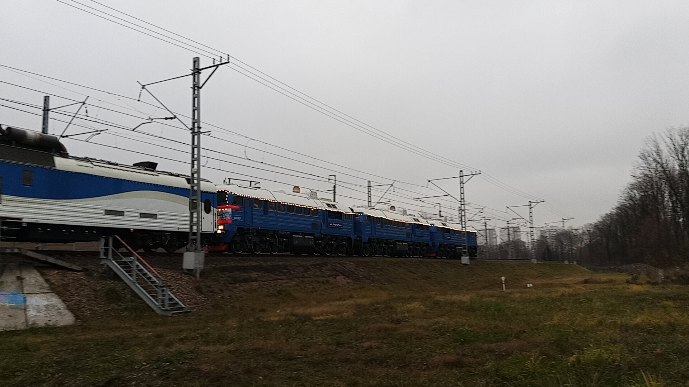

Новость
💡 «Поезд Деда Мороза» готовится к зимнему путешествию
Сегодня, как и планировалось, на Киевском направлении прошла обкатка «Поезда Деда Мороза». Праздничный состав из 23 вагонов под тягой трехсекционного тепловоза 3М62У-0058 совершил поездку до Калуги и обратно.
Забавно, но факт: именно сегодня в столице днём пошел первый снег. Как считаете, его призвал Дед Мороз из кабины тепловоза?

3М62У-0058
📌 Перегон "Мичуринец" — "Переделкино".
Обкатка «Поезда Деда Мороза» до Калуги и обратно.